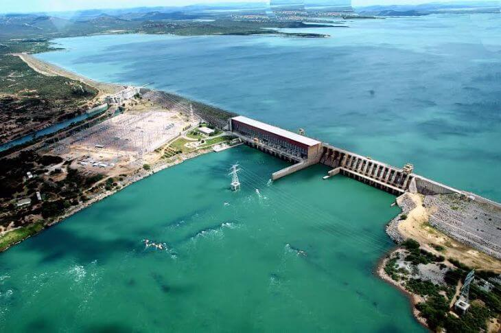
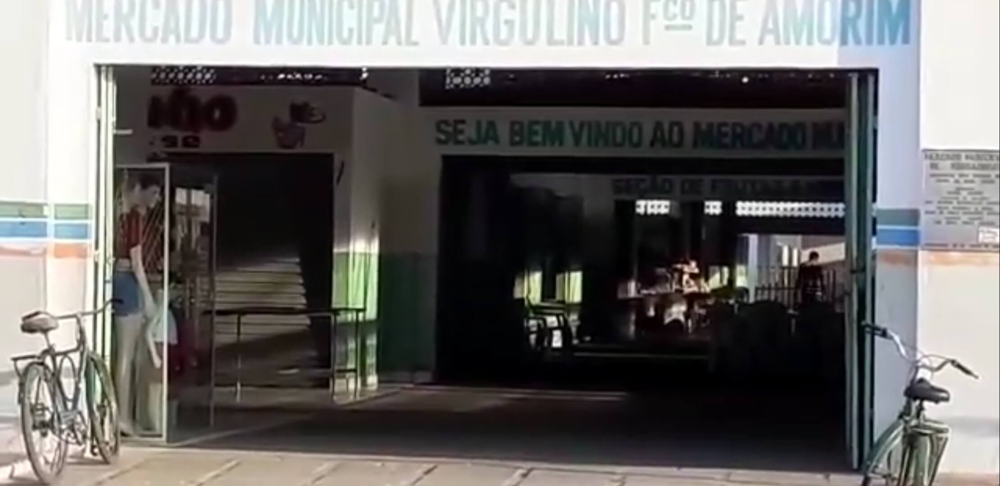
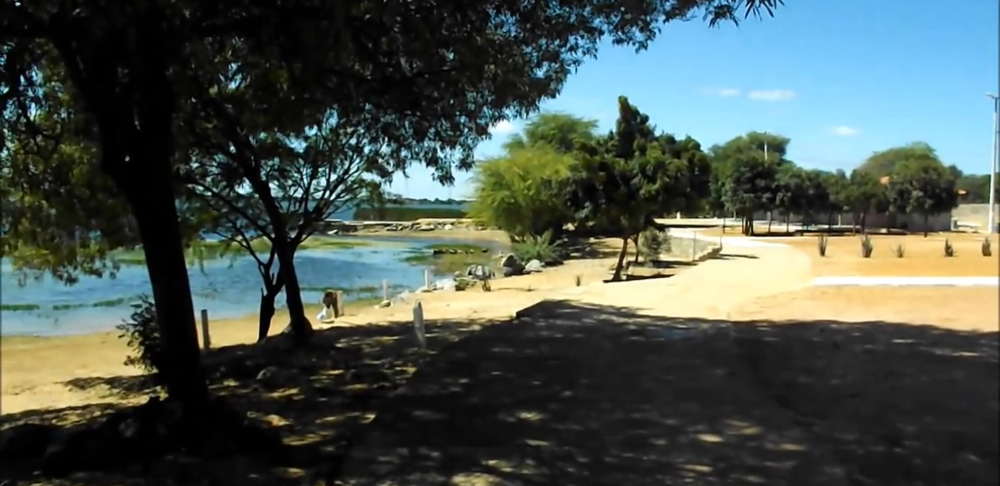

Barragem de Sobradinho-Ba

Sem dúvidas um dos pontos mais turisticos de Sobradinho-Ba.
Conhecida como a terra da barragem, o lago de Sobradinho é um dos maiores lagos artificiais
do mundo, com 4,214 quilômetros quadrados de área e 32,2 quilômetros cúbicos de água.
Mercado municipal

O mercado municipal de Sobradinho é um lugar onde a pessoa que vai a cidade costuma ir visita,
por ser um lugar onde possui bastante historia e concentra uma parte das pessoas que mais tem tempo na
cidade que tem 33 anos de emancipação.
Os restaurantes dentro do mercado é bastante sucesso por visitantes e costumam sempre estarem lotados,
principalmente durante o café o famoso cuscuz com bode.
Balneário chico periquito

Um dos principais centros financeiros da cidade, o chico periquito também possui
diversas opções de entretenimento.
começando pela bela vista, além de campo, e balanços para crianças. tem também muita diversão
com som ao vivo e muita comida gosta a sua escolha.
São diversos quiosque para você toma seu suco, refrigerante, cerveja, agua de coco, e muito mais.